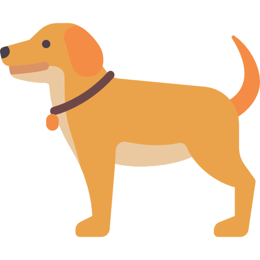

Собачкиии
Я очень сильно люблю собак (кроме чихуахуа, они похожи на крыс). И надеюсь, что в ближайшем будущем мои доходы будут позволять содержать собаку, а то и две.
Больше всего я хочу корги и добермана. Они очень отличаются внешне, но как по мне похожи на меня в хорошем и плохом настроении :)